Timeless Poetic Translation
Songs of Wonder and Melancholy
Poems translated by my father in each season

Songs of Wonder and Melancholy
Poems translated by my father in each season
山下残夏偶作
Impromptu Poem on Late Summer Heat in the Hills
李山甫
Li Shanfu
等閒三伏後
独臥此高丘
林風爽帶秋
声名何要出
吟詠亦堪休
自許紅塵外
雲溪好漱流
✐ 哭姑
✍︎ 廖雲錦
Mourning my Mother-in-Law - Liao Yunjin (Qing, active 1821 - 1850)
禁寒惜暖十余春 Forbid the cold and cherish the warmth for more than ten winters
往事回頭倍愴神 Looking back on the past, my heart is filled with sorrow
幾度登楼親視膳 How many times I climbed the stairs to personally inspect the meal
掲開幃幕已無人 Lifting the curtain, there is no one anymore
This is the content of Section 3. It may also contain longer text that will wrap on smaller screens.
Back to Top